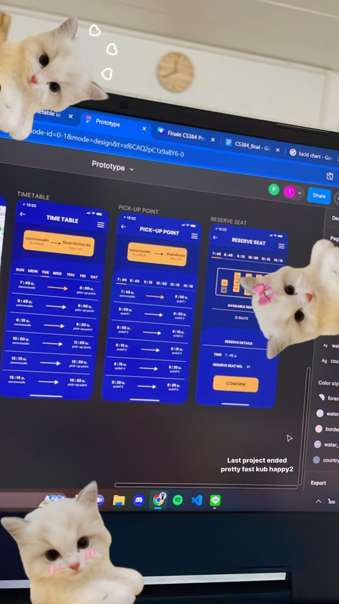

My showcase

Online Request Form & Approve System
Introduction to Software Engineer
Each role of users has different access on web-application. For example
student
users can write the information for different request. Others will check, write a comment, and confirm
their request.
In this project, the programming language I used is HTML, CSS, and JavaScript. I design this part of web
page to match with the entire project.
KinRaiDee (กินไรดี)
Database project
Database web-application project is about showing users the foods that
match the
mood and feeling by choosing answers about how do you feel today. It will provide the food to be user’s
answer options.
In this project, we separated team into two parts, front-end and back-end. I mostly responsible for
front-end and a little for back-end. I used HTML, CSS, JavaScript, PHP, and SQL to code.
Expense Tracker
Software Process and Quality Assurance
This web-application will summarize income and expense in each month and
can be
separated by tag. It will show in the summary pie chart.
In this project, I responsible for creating UXUI for user to add the date for each transaction. Next,
connecting the database, used MongoDB, and create function to see which tag has transaction the most to
the least.
Planeshooter
Mobile Application Development
This mobile application is a project from GitHub developed further to
have more
game level for user to shoot planes, add more planes, and other functions such as pause button. The
languages are used to develop is Java and Kotlin in Android Studio.
Body Mass Index
Mobile Application Development
This mobile application tells BMI, show date, color that match weight
input, BMI
value, and, criteria. It kept data in SQLite database. All coding is written in Java.
Languages
Thai - Native
English - TOEIC Score 810
Korean - TOPIK 1 Level 2